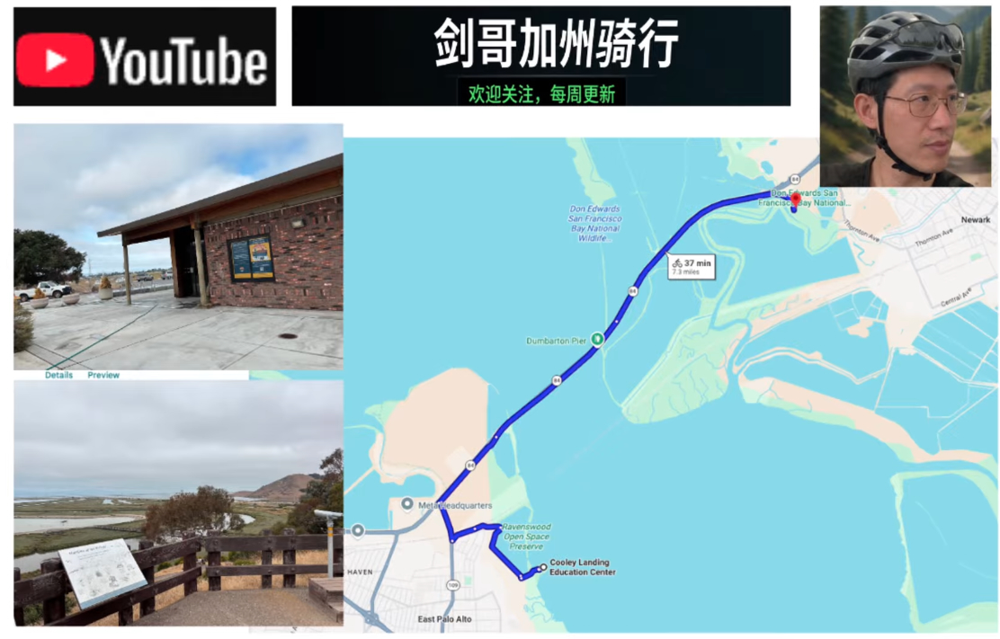

分享一下我的骑车经历...
这是一条全长约7.4英里、几乎没有明显爬坡的湾区休闲骑行路线。从 East Palo Alto 的 Cooley Landing 出发，沿 Ravenswood 湿地向北骑行，穿越风景壮观的 Dumbarton Bridge，最终抵达 Don Edwards San Francisco Bay National Wildlife Refuge。路线最大的特点是“平、景美、变化丰富”。沿途将硅谷城市景观、San Francisco Bay、湿地、潮汐水道和野生动物保护区串联起来。虽然爬坡难度低，但跨越 Dumbarton Bridge 时需要特别注意海风。总体而言，这是一条非常适合周末休闲骑行、风景摄影、观鸟和湾区探索的路线。
难度系数2。
订阅频道，不错过每一次加州探险！ 如果你也向往加州的阳光、自由的骑行生活，或者想发现那些地图上找不到的绝美小径，请一定订阅我的频道并打开小铃铛 🔔！ 你的每一次点击，都是我继续探索和拍摄的最大动力。
可以去 YouTube 上看看完整的路线 VLOG 视频： https://www.youtube.com/watch?v=-m0ovidK7lQ
